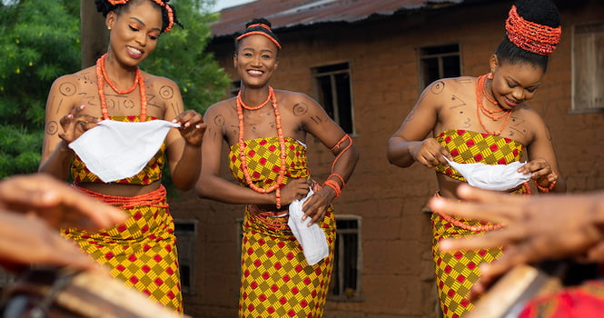

Visit Nigeria
Explore the Wonders of Nigeria
Discover the rich culture, history, and breathtaking landscapes that make Nigeria a must-visit destination.
Plan Your TripRich History and Culture
Nigeria boasts a diverse cultural heritage with over 250 ethnic groups, each with its own unique traditions, languages, and festivals. From the ancient Nok civilization to the vibrant Yoruba and Igbo cultures, Nigeria's history is a tapestry of fascinating stories and achievements.

Top Tourist Attractions
See More AttractionsYour Nigeria Bucket List
Visit the Olumo Rock
Experience the Calabar Carnival

Explore the Aso Rock
Nigerian Cuisines

Jollof Rice

Pounded Yam and Egusi Soup